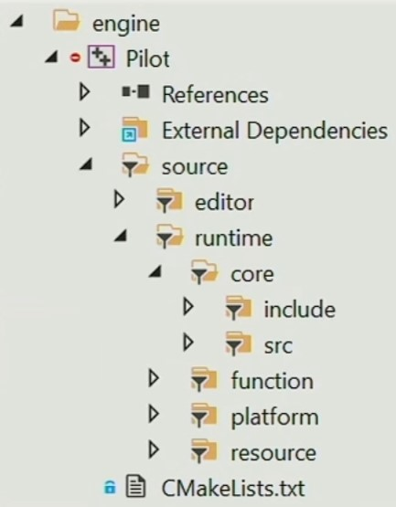

What is the game engine
Wikipedia
A game engine is a software framework primarily designed for the development of video games, and generally includes relevant libraries and support programs. The "engine" terminology is similar to the term "software engine" used in the software industry.
Game engine can also refer to the development software utilizing this framework, typically offering a suite of tools and features for developing games.
Developers can use game engines to construct games for video game consoles and other types of computers. The core functionality typically provided by a game engine may include a rendering engine ("renderer") for 2D or 3D graphics, a physics engine or collision detection (and collision response), sound, scripting, animation, artificial intelligence, networking, streaming, memory management, threading, localization support, scene graph, and video support for cinematics. Game engine implementers often economize on the process of game development by reusing/adapting, in large part, the same game engine to produce different games or to aid in porting games to multiple platforms.
Dr.Wang
- The technological cornerstone of the Matrix;
- Tools to produce ideas;
- The art of complex systems.
Zong
Objectively speaking, a game engine is a collection of modules that are needed at the bottom of games. But if you think it as a complex machine or a real world, that will be a greate artwork.
Respect, appreciate and understand it.
The game engine will provide you with a complete development tools chain for all kinds of games, even movies.
How to learn game engine
The game engine contains most of the existing science knowledge, which will take you almost a whole lifetime to understand deeply.

So most time, I want to talk about building the theoretical framework of the game engine with you. The rest will be filled in the future by yourself.
Game engine Framework

From top to bottom, they are the tools layer, the function layer, the resource layer, the platform layer and the core layer, with third-party libraries.
I place the platform layer above the core layer, which means to abstract API from core codes to the platform layer and override them.
Tools layer
Provide developers with editor tools, such as blueprints.
Function layer
It is mainly through the underlying core modules to achieve the main functions required by engine development, and Tick each function module in order.

Schedule and management among multithreads also belong to this layer.
Resource layer
It is used to record the reference relationships within or between resources and also manage the asset lifecycle.
For example, when Assimp load models, a storage structure like the following will be built.

Platform layer
It will override the API from the core layer by different methods which depend on game platforms and rendering interfaces.
Core layer
Includes math library, event monitoring, logging and other core functions.
Data structure and memory management also belong to this layer, by optimizing the underlying data storage to reduce memory holes.
Vitar Engine
In Vitar Engine, I haven't rigorously specified the directory structure as this hierarchy, but it will be organized in the near future.
You can refer Piccolo Engine.
